| newstuff
messages
pictures
movies
archive
links |
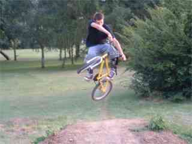 |
thirtieth june
i got a link in bmx rider
apparently. in april i had 456 unique vistors, in may i had
746. you've got to be able to laugh at yourself in this game. this
is a table on my first bmx about a year ago. nice.
archive
page should work now. |
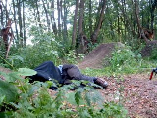 |
twenty third june
seb asleep at some trails
somewhere. not sure i can even remember myself.
new
archive page
new
links page
i have included a lot of new links on the new
page. i hope i have remembered your site, but if it's missing then
let me know. i have put some new ones on there to look at. they will
be taken down if they are not updated a lot! |
|
The country is going football crazy once again so I thought it
was about time to jump on the bandwagon. You might recognise this
guy, he is on the T-Moblie adverts. It looks fake but it's real.
This is freestyle football and it looks a lot better than the real
thing. Below is taken from woosoccer.com
The beginning...
Born in Korea, at a very early age Woo realized he had a unique
talent with the football. Inspired by Diego Maradona and his unique
ball control ability, Woo practiced and practiced to emulate the
skill. Woo won a national football skills competition in Korea and
decided he wanted to become a professional footballer. Woo achieved
this in Korea and then went on to play professionally in the German
league for Stuttgart Kickers. Still practicing his amazing ball
skills, Woo realized he wanted to become famous worldwide as the
Greatest Football Entertainer in the World.
Achievements.
Hee Young Woo, broke the Guinness Book of World Records for
football head tricks in 1989 by heading a ball for 5 hours, 6
minutes and 30 seconds.
Recently...
Woo then decided to perform his awesome skills in the UK, the
'home of football' and has performed on television, for Nike in
recent freestyle commercials and events across the UK, at football
matches, corporate events, coaching and even impromptu public
appearances whilst he practices his skills. During the film shoot
for the Nike Stickman TV commercial, Brazilian World Cup winner
Ronaldinho was so impressed he even asked Woo to sign his football!.
Woo is widely renowned at the Greatest Football Entertainer in the
World. |
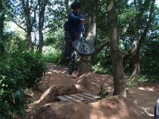 |
twentieth june
my car is dead. seb
at tenterden.
new
movies page. |
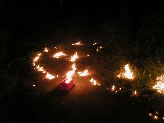 |
ninteenth june
news from the last
month:
first
may
twenty
first may
twenty
second may
twenty
third may
fourth
june
fifth
june
thirteenth
june
fourteenth
june
sixteenth
june
seventeenth
june
eighteenth
june
|
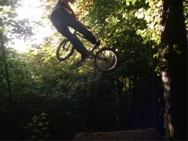 |
fifteenth june
trip to leatherhead
yesterday and some other trails. was a mega day.
i guess this
must be pipe doing a turndown but then is didn't know pipe was goofy
so maybe it's todge. and now i look at it again it's not really a
turndown, morea look back. anyway it's someone doing a nice
something.
i was at work today but i am home again now.
holiday for 3 days then weekend. bonus. an electrictrician is here
now fixing the lights in my house as they all blew up last night. no
time for more media now. the trails are dry. |
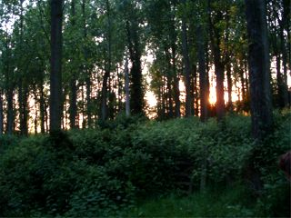 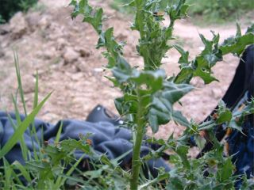 |
twelth june
broadband is working now.
illegaly. just some quick news to push:
250403 the new trails
are really hidden. they are in the middle of a really tight wood
with no footpaths in. i guess they'll be found eventually, but
they'll be there a while. they are going to be really small so
everyone can ride them.
Big Dig Thursday
rudi is having a big dig push day on thursday that those
trails mentioned above. come and help him in the morning and then
ride the trails til it gets dark. he is yurgen2003 at hotmail dot
com for directions to the trails. or ring me when you get to
headcorn station and i'll meet you. |
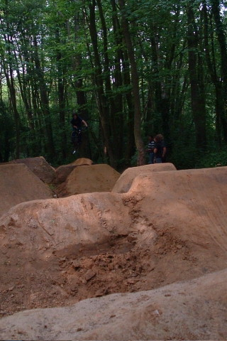 |
eleventh june
today is my last day
of work for nine days (except tuesday). this is a very good thing.
in that time i will ride a lot of trails and get broadband as
hopefully there will be a lot of media. there's already a lot of
media on my computer waiting to be used os after next week it will
be like a big stash of media so i can hibernate all
winter.
the picture on the left is maggot trying joeys in the
wet. he is very careful when he rides not to wreck the lips. good
lad. more pictures of maggot at http://www.randombmx.com/
probably.
anyway so the point is that i will be very busy
riding and digging which means no updates for over a week i expect.
you'll live. and if you get too bored then start your own blog. http://www.webcrimson.com/.
Anyway
what i am driving at is ring me on 07762140068 and find out where i
am if you want to ride. if my battery lasts that long and if i
remember to take my phone. |
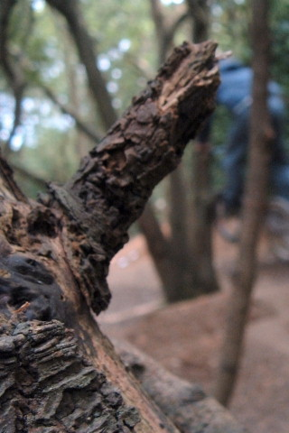 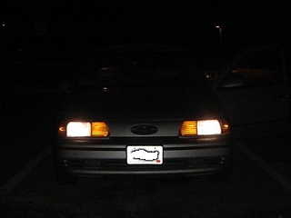 |
tenth june
hoggs green have been attacked but
the pikeys again. i think it's time to give up there until the
winter so it will dry much harder. i don't like giving up though so
i am going to dig there for an hour a week until they get bored of
knocking them. the annoying thing is that they are only about
12.
last night went to tenterden and rode the new, slightly
damp and soft trails with nigel and tom and paul and dean. it was
really fun. one of the best sessions of the year so far. tenterden
locals are really friendly. we will come and visit again soon. maybe
go on a trip somewhere? and paul has got to come and try the big
sets at orange so we know they work.
no pictures again today
although i did take some, buti am still not on broadban yet so be
patient.
For once, a serious
message:
We have received a warning at the London Ambulance
Service and have
been asked to pass on the information to all our
families and friends.
The LAS have units closely associated
with the Police squads based in South London who are basically
fighting Gang Crimes. The 'street gangs' in London (particularly
South London at present, but it is sure to spread) have initiation
tasks which new gang members have to carry out to be admitted to the
'gang'.
The latest craze is to drive around, deliberately
with no lights on their cars. The first person who 'flashes' them,
points at them or sounds their horn at them, has to be followed by
that new gang member in their car, who then has to fire a shot into
that vehicle!!! with no regard as to who is inside.
Our
official instruction is that if we see a vehicle with no lights on,
we are NOT to 'flash' it, etc. and the advice to friends and family
is that you should ignore any vehicles you see without lights. I
would ask that you pass this info on to all your family, friends and
colleagues by phone or e-mail, and who knows, it may save a
life! |
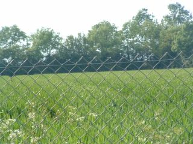 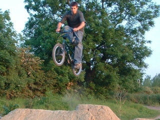 |
ninth june
it seems like some people got
the wrong end of the stick with my rant. all i am asking for is a
bit of respect for the trails, and most people give that. it's just
a shame about the few who don't.
we don't want you to come
and help in the winter cos that i hastle, just build your own trails
and get them running nice. we were unfortunate this year as trails
which we had been working until feburary had to be knocked. that's
why nodig=noride sucks sometimes. support your local trailscene. and
go see www.prettyshady.com - teaching you how to dig in the dry
since 1998 or something like that.
hoggs green have been
rebuilt. thjey are nice now. the gaps are about as long as the bowls
so they are really tight and most people can't ride them which is
good.
seb is coming next week. i have the week off except
tuesday. plans being made. pipex broadband is in the post. |
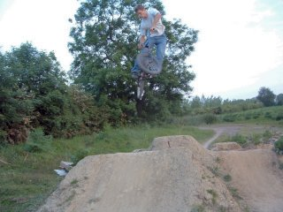 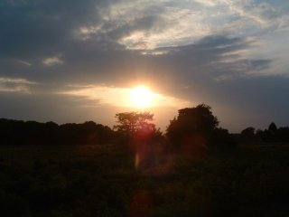 |
eighth june
a lot of people go to the
trails these days. the lip is really worn and it;s pretty horrible
to ride. it seems like there are a lot of people who are too lazy to
dig in the winter but when the summer comes around they are only too
happy to come and rape your trails. same old story i guess.
or people go on about how this is bad or this needs to be
fixed or "why don't you do this". WHY DONT YOU DO IT. people are too
lazy to fix their own trails but expect you to fix yours so that
they can ride.
stuff like i took my old car seats down the
the trails. people just don't respect your stuff. people have been
burning then with lighers and ripping them apart. and there's litter
all over the place. now i know how poll feels about kiddy a bit. did
poll ever start some new trails? i don't know but you can be certain
that if he did you won't know about them. you know what i am
saying. |
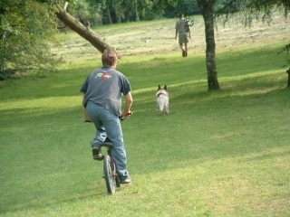 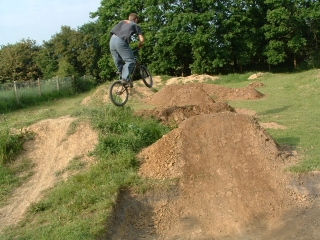 |
seventh june
i was going to update last
night but a LOT of stuff happened. went down to hoggs green.
they have dug a massive hole down there now. you can fit about 5
people in it. anyway council were not happy and wanted it filled in.
then i go down there yesterday and someone has trashed the new
trails and put them in the hole. so i went down at about 9:30 last
night and dug till the hole was gone. trails still need rebuilding
though. marc was there too so at least there was someone to talk
to.
i have a LOT of holiday to use up by the end of this
month. eight days to be precise. i can carry some over but that
means i have to use about 6 plus i get a flex-leave day so that's
seven days by the end of the month. i might have next week off then.
trips need to be done.
i have a LOT of media to put up. over
a months worth, but i need to get hooked up to the world wde web
internet before it can happen. I am looking for a good ISP so tell
me who you use and if they are good in the book. at the moment i am
looking at pipex. am i likely to use more than 1GB a month?
thank-you for your help. |
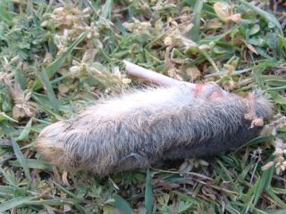 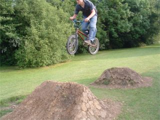 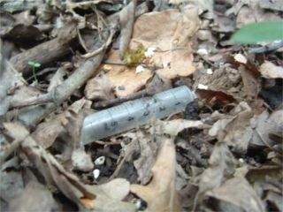 |
fifth june
time check: 09:15. I have
been riding trails for an hour already today. having jumps near your
house is very good indeed. plans for later include something along
the lines of PORC, tonbridge skatepark, paddock wood and matfield.
So doing the rounds in the tonbidge area. PORC sucks and so does the
skatepark but I am taking it easy at the moment until the scab on my
knee falls off, so its a good time to visit some places i
guess.
there's a lot of news going on around here. from http://www.randombmx.com/:
Gravesend Skatepark
There's a new
skatepark at Cascades leisure centre in Gravesend, built by Kev
Garwood and Aaron Bostrom. It's got a 12ft wide box with a nice
curved landing, super tight fun mini with a 4ft flat bottom. 6ft
quarter to wallride, nice flat bank, driveway/grindbox and a huge
quarter the whole width of the skatepark with a real steep flat band
in the middle and it's got a 6ft deck so all the deck moneys are
outta the way.
There'll be more if the skatepark lasts for a
while, coz it was all burned down on the second day of building, but
nothings been touched for the last week or so...
go
there soon. there are plans afoot for a bmx competition at
maidstone skatepark on 15th august. It looks pretty official. live
dj's, breakin' (that's how they spelt it) and street theatre. don't
expect to see me there.
also if you don't already know, decoy needs your help. read http://www.prettyshady.com/ and
email this person:
RICHARD YOUNGER-ROSS
MP
email: yrossr@parliament.uk
pictures on left are a rabbits foot, tim on a longish jump at
hoggys and a syringe in some dodgy woods. |
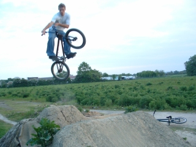 |
fourth june
trails are getting pretty
raped these days. it's gonna be crackin flags on sunday. |
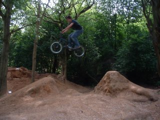 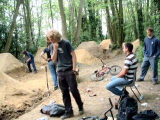 |
third june
one of the pictures from
ashford. this jump is a lot bigger than it looks. the warren has
very sandy soil so it's good for digging. they are on a bit hill so
the first is very small then this is the second and the third is
probably a similar size. i hit it after this jump and landed from
about 10ft onto flat. apparently you need to break before it. i
have over shot a lot of jumps in the last month, usually to the
front wheel. my wrists hurt sometimes. is this
normal?
below that is joeys trails. joeys is where dean
hearne used to dig. it has been very run down. it's by a school and
they do cross contry through there and encourage people to run
on the trails. kids go down there and push shopping trolleys on it.
when we got there the locals were building it all up. we helped a
bit. it looks really good now. |
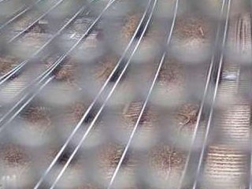 |
second june
archive links on the
right that were broken should be fixed. hit a curb last night and
buckled my wheel. that's on my car not on my bike.
about this time last year i took some photos in ashford which are
in the archive adn on the left. last friday we went on a trip to
ashford and i took some more pictures which are still on my camera
unless tim has deleted them. i might get a chance to get them off
there tonight so maybe some real pictures tomorrow who
knows? |
|
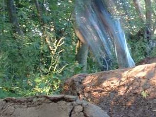 |
first june
lots of riding and a dead
knee. back at work. new month new layout. archive links down the
right to keep you amused til i update.
that is black mill this time last year. the mid there was good
but took ages to dry out. |
{kind=link}